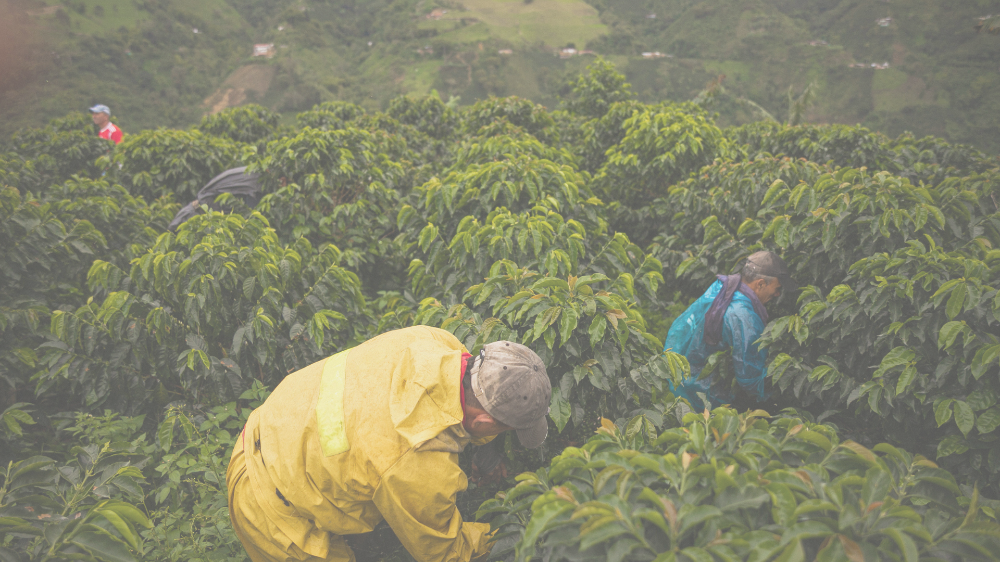
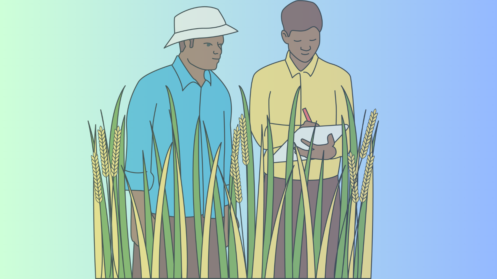

Our services/Products

Precision Agriculture
We provide a sophisticated tool that harnesses remote sensing, weather forecasting, and advanced data analytics to monitor crop health and optimize water management with precision.
$-

Agribusiness tools
Designed for companies working with smallholder farmers, we offer tailored decision-making tools that leverage data insights to enhance supply chain efficiency, sustainability, and business growth.
$-

M.R.V
Empower agribusinesses and smallholder farmers with our Monitoring, Reporting, Validation - MRV tool, providing precise monitoring, reporting, and verification to enhance sustainability and boost productivity.
$-